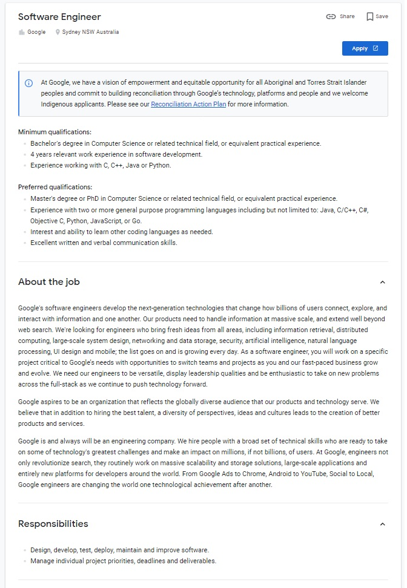

Kylie Copeland
S3882854@student.rmit.edu.au
Student Number: S3882854
The Information Technology industry will always be in demand for skilful professionals because technological innovation never stops. The reason being its exponential growth. I want to be a part of making exciting changes to the future using technology. Solving technical problems is something I've always found to be incredibly satisfying and have obsessed with computers since childhood. The past three years, I have worked as a part-time online administration assistant, but Artificial Intelligence (AI) and software development are the areas I have a particular interest in, and I am eager to further study related to these sectors.
I'm currently enrolled with RMIT University in which I am studying the course, Introduction to Information Technology. Prior to this course, I completed a certificate IV in Information Technology Networking by correspondence with TAFE NSW. After completing that course, I knew that I wanted to continue my learning in this field and RMIT University is an ideal environment for me to get my queries answered and to feed my desire to understand more about IT.
I hope to gain a better understanding of what's involved in pursuing a career in Information Technology. Intro to IT will provide a steppingstone to the next level of higher education that I will need to complete, in order to pursue my goal of becoming an IT professional. In general, I hope to advance and improve on my knowledge of the fundamentals of technology. Not only will it be valuable for working in an IT related field but, having a basic understanding of technology and how it is applied in the workplace is essential for professionals working in almost any industry.
https://careers.google.com/jobs/results/84362558342865606/
The Software Engineer position, as seen in the advertisement depicted above, is an opportunity to work for the world famous, ground-breaking organisation, Google. As a Google Software Engineer your tasks may include developing entire deployment pipelines, from cloud to edge, implementing serverless architectures, designing efficient storage solutions and integrating backend and external tools and services. This company provides billions of people access to the newest platforms to communicate and connect so it may involve handling rapidly evolving code bases and implementing the best security practices for handling sensitive data. The Google organisation is continuously expanding and developing next generation technologies with products like Google Ads, YouTube, Chrome with Android. This position is offering the chance to work together with a team some of the top IT experts and have an impact and contribute to the development of entirely new platforms and deploy revolutionary software that could change the way the world uses technology for years to come.
This position is requiring a Software Engineer that is versatile and enthusiastic to take on new problems across the full stack. This would mean having the experience and capability to build and deploy web and mobile apps, cross-platform applications, and solutions for IoT, working with the server side of applications as well as the client side. It requires a wide variety of skills and knowledge, from databases to graphic design and UI/UX management. It would be expected that the applicant has experience with python and C# and knowledge of JavaScript, HTML and CSS. Though it is possible to work as a Developer without formal qualifications, the ability to demonstrate these technical competencies to a prospective employer is needed, especially for top end organisation such as this.
I have acquired a range of transferable skills during my years of work and study. I have been employed by organisations where I have had the opportunity to be trained in and understand the importance of teamwork, attention to detail and time management. As a Croupier, having a high level of mathematical and analytical ability was required. This role also involved handling large amounts of cash, calculating complex payouts and was to be accomplished with speed and accuracy. Administration and clerical roles required a high proficiency in completing tasks such as filing paperwork, creating complex documents, communicating with clients by phone and email, managing calendars and making appointments. As well as a solid working knowledge of Windows and MacOS, the skills that I have acquired may be useful in a career as an IT professional.